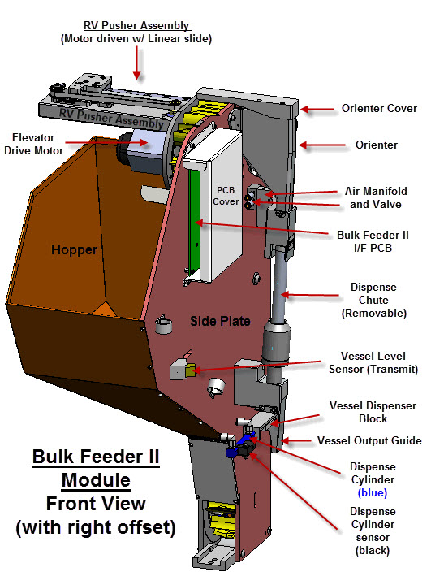
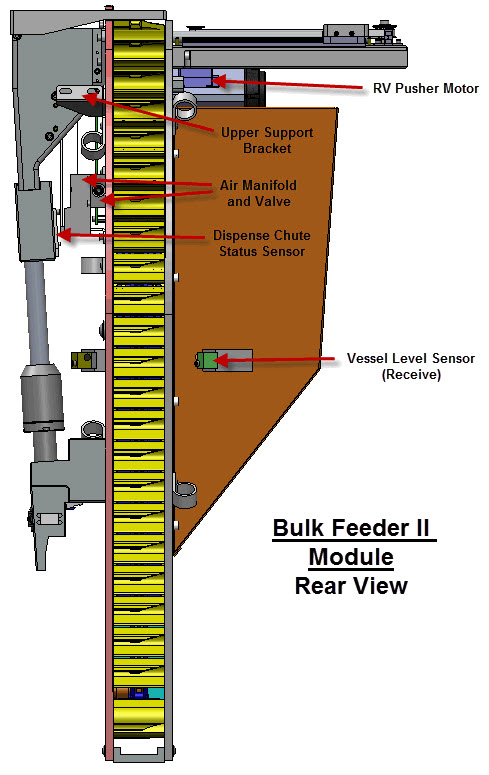
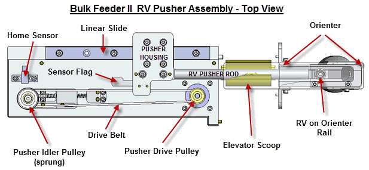
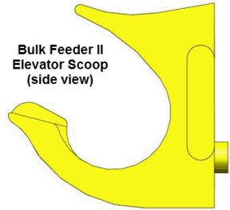
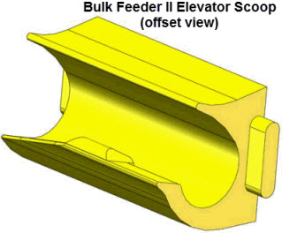
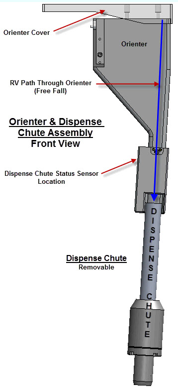
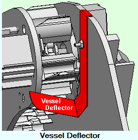

Bulk Vessel Feeder II Operating Principles
Purpose
This procedure details the operating principles for the bulk vessel feeder module.
Module Updates
The bulk feeder II module features the following hardware updates:
- Single RV pusher that is motor driven
- RV-orienting rail
- Hand-removable dispense chute with improved dispense angle
- Electroless nckel-finished side plates and orienter
- Stainless steel hopper
- Scoop design change
Module Function
To provide a continuous supply of correctly oriented vessels from the bulk vessel feeder hopper to the supply carriage.
Terminology
For this document, a vessel is referred to as an RV (reaction vessel) and the bulk vessel feeder is referred to as the bulk feeder.
Note: Refer to the Reagent Carriage Module Operating Principles for explanations of specific vessel types and uses.
Location
Note: The location and function of the bulk feeder module are the same for the DxI 600 and DxI 800.

Operational Overview
The bulk feeder operating process steps:
- When RVs are needed (dispense chute is not full), the elevator actuates.
- As the elevator moves, the elevator scoops lift the RVs out of the hopper.
Note: Not all scoops contain RVs. The module works on a principle of averages. Engineering predetermined the RV yield and the yield is adequate for supplying RVs for any type of testing.
- RVs that are not seated correctly in the elevator scoops, fall out of the scoops and into the hopper as the scoops proceed upward.
- RVs that are positioned correctly, proceed to the upper end of the elevator.
- When the elevator scoops are positioned in front of the single RV pusher, the following occurs (refer to the RV pusher and orienter graphics in this document):
If Then No RV is present The RV pusher actuates, but no RVs are placed into the orienter rail. RV is present - The RV pusher actuates, moving the RV onto the orienter rail.
- The RV pusher pauses part way to allow the bottom of the RV to swing downward due to gravity, leaving the open end upward.
- The RV is held by the RV ring on the orienter rail.
- The RV pusher fully extends to push the RV off the end of the orienter rail.
- The RV falls through the orienter and into the dispense tube.
- The RV pusher is retracted.
- The elevator moves the next scoop forward in front fo the RV pusher.
- The dispense chute continues to receive RVs until it is full (detected by the dispense chute status sensor). The dispense chute status sensor signals the elevator to stop.
- The dispenser block is moved back and forth, dispensing a single RV whenever the supply carriage is presented.
Component Locations







Component Functions
| Component | Description and Function |
|---|---|
| Upper Support Bracket | Stabilizes the top of the bulk feeder module. To remove the module, this bracket must be unbolted from the instrument chassis or bulk feeder. The bracket has slotted holes for chassis attachment to allow for adjustment after the base of the bulk feeder has been secured. |
| Dispense Chute | Tube-shaped vertical storage area along the side of the module that can store up to seven RVs for the vessel dispenser.
Note: The dispense chute is spring-loaded and hand-removable. The removal process is described in the bulk feed II installation procedure.
|
| Orienter cover | Removable acrylic cover for the orienter that allows access to the orienter rail and opening from the top. The cover lifts off vertically after the two countersunk screws are removed. The orienter cover is required for proper operation of the bulk feeder. The cover keeps RVs from escaping the orienter rail and assists in the proper RV orientation. |
| Dispenser Block | Allows one RV at a time to drop into the supply carriage. The dispenser block is a Delrin block with opposing key slots that attaches to the end of the dispenser cylinder and controls the release of RVs.
 |
| Dispenser Cylinder | Moves the dispenser block back and forth to place one RV at a time into the supply carriage.
Note: The dispense chute is never allowed to empty because there must be a nesting RV above the one being dispensed to help control the orientation of the RV being dispensed.
Note: The dispense cylinder is referred to as the escapement valve in the system software.
|
| Elevator Chain | Consists of a loop chain links that is mechanically driven at the top of the assembly by a stepper motor and moves the elevator scoops. Other information regarding the elevator:
|
| Hopper | Holds bulk RVs and funnels the RVs toward the elevator. The hopper maximizes the number of RVs that enter the scoops correctly.
Note: The hopper for the bulk feeder II is made of stainless steel, which is conductive and assists in static discharge.
|
| Interface PCB | Contains the input and output connections for the bulk feeder module. The bulk feeder II interface PCB is unique in that it uses a USB cable to communicate the elevator drive motor encoder information directly to the CPU PCB. |
| Dispense Air Manifold and Valve | Located on the right side of the module.
Note: Each valve has a built-in LED that, when lit, indicates that power has been applied to it.
|
| Elevator Drive Motor | Drives the elevator. The drive motor is located near the top of the module, to the left of the drive sprocket, and is mounted to the left side plate.
There is an encoder that checks every move to detect motor slip. Motor slip recover:
|
| Orienter | Positioned above the dispense chute, it accepts an RV in either orientation (open-end left or open-end right), and then correctly orients the RV before the RV enters the dispense chute.
Note: The orienter for the bulk feeder II is silver in color and has an Electroless Finish, which is conductive and assists in static discharge.
|
| RV Pusher | Moves the RV from the elevator scoops onto the orienter rail to orient the RV correctly, and then down the rail to the orienter opening where the RV falls into the dispense chute. |
| Sensors | Five sensors are located on the module:
Note: The hopper vessel height sensor and the dispense chute sensor together provide the instrument control system with signals that keep the chute full without overflowing.
|
| Elevator Scoops | Attached to the elevator chain, the scoops pick up RVs from the hopper.
|
| Side Plate | The large flat surface of the bulk feeder to which parts and components are attached.
Note: The side plate for bulk feeder II is silver in color and has an Electroless Finish that is conductive and assists in static discharge.
|
| Elevator Sprocket | The sprocket that is attached to the elevator drive motor that rotates the elevator chain.
Note: The bulk feeder II has a second upper sprocket (idler) behind the RV pusher position to help guide the elevator chain.
|
| Vessel Deflector | Ensures that RVs are seated correctly in the scoops, when the RVs arrive at the RV pusher locations, either by:
|
Dispenser Block Operation
The dispenser block is the key device in the dispenser assembly. The dispenser block limits RV entry into the supply carriage and performs the delivery function using the steps shown here.
| Step | Action | Graphic |
|---|---|---|
| 1 | The air cylinder is in the retracted position at the start of each cycle. The RV cannot fall through the block because its ring rests on the lower "key slot" side walls. |  |
| 2 | The dispense block moves when the air cylinder is actuated. The RV drops through the wider opening in the "key slot" and is dispensed into the waiting supply carriage. |  |
| 3 | The next RV in the dispense chute stops on top of the block on the upper "key slot" sides. |  |
| 4 | The cylinder returns to its original position and the RV drops through the upper wider "key slot" opening and rest on the lower "key slot" sides, ready for the next dispense. |  |
Interacting Devices
The bulk feeder interacts with the supply carriage.
Software:
- sends the supply carriage to a location under the bulk feeder, when an RV is required.
- operates the bulk feeder dispenser causing an RV to be loaded into the supply carriage.